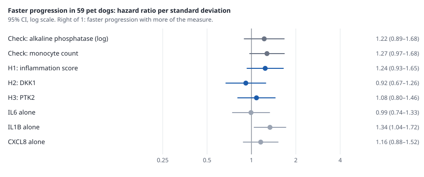

Report · Updated November 26, 2026 · 4 min read
Engine Cycle 13: In Pet Dogs with Osteosarcoma, Does Tumour Inflammation Go with Faster Relapse?
Run November 26, 2026. The thirteenth cycle of the For John research engine. Pre-registration: research_notes/Engine/cycle-13-dog-inflammation/PREREGISTRATION.md, committed at commit 4794e2e before any expression value was read. The file containing the values had already been downloaded to read the clinical columns, so the order of reading rests on our account; the commit order shows only that the plan came before the results. Script: tools/engine_cycle13_dog_inflammation.py. Results: data/engine/cycle13/results.csv.
Summary
Two of this project's leads propose drug trials in pet dogs with osteosarcoma:
- Lead 1: blocking IL-1 or IL-6 after amputation;
- Lead 4: blocking FAK or DKK1.
We asked whether dogs whose tumours carried more of these signals before treatment relapsed sooner. The data come from a public trial of 59 dogs treated with amputation and chemotherapy, 47 of whom progressed or died during follow-up.
- Inflammation score (IL6, IL1B, CXCL8): inconclusive. Hazard ratio 1.24 per standard deviation (95% CI 0.93–1.66). It leans towards faster relapse but could be chance.
- DKK1: refuted by the pre-registered rule: 0.92 (0.67–1.26). Dogs with more tumour DKK1 RNA did not relapse faster; an effect of 1.3 or more is ruled out.
- PTK2 (FAK): inconclusive: 1.08 (0.80–1.46).
- The built-in check was weak. Serum alkaline phosphatase, a long-known bad sign in dogs, leaned the expected way (1.22, 0.89–1.68) without reaching clarity. These 59 dogs are a small sample.
- An exploratory flag, not a result: IL1B on its own leaned towards faster relapse (1.34, 1.04–1.72). It is one of four single genes looked at as a secondary analysis, with no correction for multiple tests.
- Predictions: P38, P39 and P40 were all wrong. The scorecard records them.
What it does and does not say about the leads.
- Tumour RNA before treatment is not the same as inflammation in the body after surgery, which is what lead 1 is about. So this neither supports nor undermines the idea of blocking IL-1 or IL-6 after amputation.
- For lead 4, in these 59 dogs tumour DKK1 RNA did not mark worse outcome under standard treatment, so these data give no support for using it to choose dogs for a DKK1 trial. Whether it predicts response to DKK1 blockade was not tested.
How to read the labels. Every number here is (our calculation) from open data unless marked otherwise.
What Was Tested
- Data: GEO GSE180303, a prospective trial in pet dogs with limb osteosarcoma.
- Treatment: amputation, then carboplatin and/or doxorubicin.
- Samples: pre-treatment tumour biopsies on Affymetrix Canine 2.0 arrays, one or two per dog (109 arrays, 59 dogs: 50 with two, 9 with one), averaged per dog.
- Outcome: time to progression.
- The dataset gives no censoring flag, so a rule was fixed in advance. Dogs whose progression time equals their survival time and is a year or more were treated as alive and progression-free at last follow-up. All others were counted as events.
- That gave 47 events. 40 dogs progressed or died within a year.
- Measures: RNA of the lead genes, as a hazard ratio per standard deviation from a Cox model.
- Verdict rules, fixed in advance:
- Supported: the whole 95% interval is above 1.
- Refuted: the upper end is below 1.3.
- Inconclusive: anything else.
Results

| Measure | Hazard ratio per SD (95% CI) | One-year odds ratio per SD (95% CI) | Verdict |
|---|---|---|---|
| Check: alkaline phosphatase (log) | 1.22 (0.89–1.68) | 1.35 (0.74–2.46) | weak |
| Check: monocyte count | 1.28 (0.97–1.68) | 1.82 (0.87–3.77) | weak |
| H1: inflammation score (IL6, IL1B, CXCL8) | 1.24 (0.93–1.66) | 1.39 (0.77–2.51) | Inconclusive |
| H2: DKK1 | 0.92 (0.67–1.26) | 0.71 (0.40–1.24) | Refuted |
| H3: PTK2 (FAK) | 1.08 (0.80–1.46) | 1.11 (0.64–1.93) | Inconclusive |
| IL6 alone | 0.99 (0.74–1.33) | 1.02 (0.59–1.77) | secondary |
| IL1B alone | 1.34 (1.04–1.72) | 2.16 (0.98–4.79) | secondary |
| CXCL8 alone | 1.16 (0.88–1.52) | 1.14 (0.65–1.98) | secondary |
| IL1A alone | 0.93 (0.66–1.31) | 0.85 (0.49–1.45) | secondary |
- Sensitivity check: leaving out the nine dogs whose event is least certain (progression time under a year, equal to survival time), the inflammation score gives 1.24 (0.89–1.74).
- Adjusted for alkaline phosphatase: 1.19 (0.87–1.61).
- DKK1 and PTK2 were unchanged after adjusting for alkaline phosphatase (0.94, 0.68–1.29; 1.07, 0.80–1.45). The sensitivity check was run for the inflammation score only.
What This Means
- For lead 1 (IL-1 or IL-6 after amputation in dogs):
- The tumour signal leans the expected way without being clear. The one gene that stood out on its own is IL1B, the gene for IL-1β.
- That is a weak, unplanned pointer. It fits the IL-1 half of the lead and is worth testing in a second dog dataset with outcomes.
- It is not evidence that blocking IL-1 would help.
- For lead 4 (FAK or DKK1 in dogs):
- Neither gene's tumour RNA marked the dogs that did worse. In people, this project found only a weak, non-significant trend for DKK1 (
reports/Do the leads predict survival.md). - These data give no support for using tumour DKK1 RNA to choose dogs for a DKK1 trial. Whether it predicts response to DKK1 blockade is a separate question, not tested here.
- Neither gene's tumour RNA marked the dogs that did worse. In people, this project found only a weak, non-significant trend for DKK1 (
- The weak check matters. Alkaline phosphatase is one of the best-known prognostic signs in dogs with osteosarcoma (general knowledge), and here it was only a lean. With 59 dogs, moderate real effects can be missed. "Inconclusive" here means just that.
Limits
- 59 dogs from one trial, treated with two chemotherapy schedules.
- The censoring rule is an assumption; the dataset does not say which dogs were still alive.
- Tumour RNA from one biopsy, on an older array design.
- Several measures were tested. Only H1 was the main test, and the single-gene results are uncorrected.
Files and Reproduction
python3 tools/engine_cycle13_dog_inflammation.py fetchdownloads the series matrix and platform annotation from GEO (about 23 megabytes, not in git).python3 tools/engine_cycle13_dog_inflammation.pyruns the analysis in seconds.- Outputs:
data/engine/cycle13/results.csv,data/engine/cycle13/summary.jsonanddocs/figures/engine13_dogs.svg.

Data source and credit. NCBI GEO series GSE180303, a prospective clinical trial of gene-expression models of drug response in dogs with osteosarcoma (submitted by Colorado State University; PubMed 34263337 and 34635775).
Change Log
- 2026-11-26: after an independent check, the DKK1 conclusion narrowed to these dogs and to outcome under standard treatment; arrays per dog and the scope of the sensitivity check stated correctly.
- 2026-11-26: cycle run and reported. Under the pre-registered rules: H1 inconclusive, H2 refuted, H3 inconclusive. The alkaline-phosphatase check leaned the expected way without reaching clarity. P38 to P40 wrong. No deviations.
Source file: reports/Engine cycle 13 - in pet dogs does tumour inflammation go with faster relapse.md. Corrections welcome as a GitHub issue. Not medical advice.